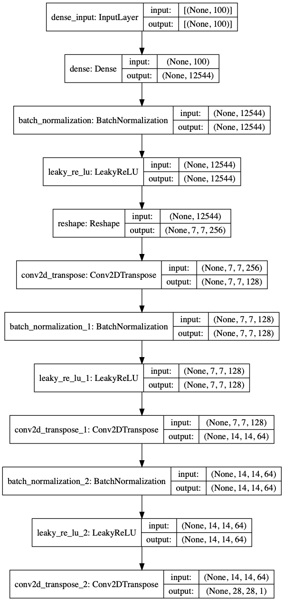
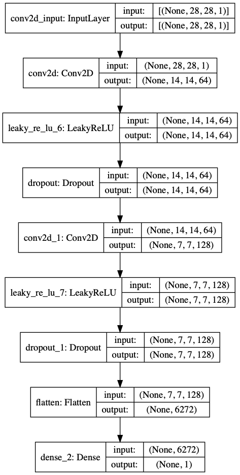

GAN Example in TensorFlow¶
Author: Umberto Michelucci
Version: 1.0
!nvidia-smi
/bin/sh: nvidia-smi: command not found
# This line is not necessary to run the code. But otherwise the pptxas is not found
# and some parts of the tensorflow code will be re-compiled on the run, possibly
# making the start of the training slower than usual.
!PATH=$PATH:/usr/local/cuda-11.3/bin
import glob
import matplotlib.pyplot as plt
import numpy as np
import os
import PIL
from tensorflow.keras import layers
import time
import tensorflow as tf
from IPython import display
print(tf.__version__)
2.5.0
A GAN does not need test images. The dataset is not split, and only a set of images is used, this is why in the next cell only the train images are needed.
# Don't care for the test images with GANs...
(train_images, train_labels), (_, _) = tf.keras.datasets.mnist.load_data()
Some normalization and reshaping. Since we will use convolutional layers we need the images to have a 2D structure (28x28).
train_images = train_images.reshape(train_images.shape[0], 28, 28, 1).astype('float32')
train_images = (train_images - 127.5) / 127.5 # Normalize the images to [-1, 1]
BUFFER_SIZE = 60000
BATCH_SIZE = 256
# Batch and shuffle the data
train_dataset = tf.data.Dataset.from_tensor_slices(train_images).shuffle(BUFFER_SIZE).batch(BATCH_SIZE)
Generator Model [1]¶
# Note that the input is a random vector, not the images!
# model Reference can be found in [1]
def make_generator_model():
model = tf.keras.Sequential()
model.add(layers.Dense(7*7*256, use_bias=False, input_shape=(100,)))
model.add(layers.BatchNormalization())
model.add(layers.LeakyReLU())
model.add(layers.Reshape((7, 7, 256)))
assert model.output_shape == (None, 7, 7, 256) # Note: None is the batch size
model.add(layers.Conv2DTranspose(128, (5, 5), strides=(1, 1), padding='same', use_bias=False))
assert model.output_shape == (None, 7, 7, 128)
model.add(layers.BatchNormalization())
model.add(layers.LeakyReLU())
model.add(layers.Conv2DTranspose(64, (5, 5), strides=(2, 2), padding='same', use_bias=False))
assert model.output_shape == (None, 14, 14, 64)
model.add(layers.BatchNormalization())
model.add(layers.LeakyReLU())
model.add(layers.Conv2DTranspose(1, (5, 5), strides=(2, 2), padding='same', use_bias=False, activation='tanh'))
assert model.output_shape == (None, 28, 28, 1)
return model
gen = make_generator_model()
tf.keras.utils.plot_model(gen, show_shapes=True)

generator = make_generator_model()
noise = tf.random.normal([1, 100])
generated_image = generator(noise, training=False)
plt.imshow(generated_image[0, :, :, 0], cmap='gray')
<matplotlib.image.AxesImage at 0x7f8e314afe10>

Discriminator Model¶
def make_discriminator_model():
model = tf.keras.Sequential()
model.add(layers.Conv2D(64, (5, 5), strides=(2, 2), padding='same',
input_shape=[28, 28, 1]))
model.add(layers.LeakyReLU())
model.add(layers.Dropout(0.3))
model.add(layers.Conv2D(128, (5, 5), strides=(2, 2), padding='same'))
model.add(layers.LeakyReLU())
model.add(layers.Dropout(0.3))
model.add(layers.Flatten())
model.add(layers.Dense(1))
return model
discriminator = make_discriminator_model()
decision = discriminator(generated_image)
print (decision)
tf.Tensor([[0.00468918]], shape=(1, 1), dtype=float32)
tf.keras.utils.plot_model(discriminator, show_shapes=True)

Loss Functions¶
# This method returns a helper function to compute cross entropy loss
cross_entropy = tf.keras.losses.BinaryCrossentropy(from_logits=True)
def discriminator_loss(real_output, fake_output):
real_loss = cross_entropy(tf.ones_like(real_output), real_output)
fake_loss = cross_entropy(tf.zeros_like(fake_output), fake_output)
total_loss = real_loss + fake_loss
return total_loss
def generator_loss(fake_output):
return cross_entropy(tf.ones_like(fake_output), fake_output)
generator_optimizer = tf.keras.optimizers.Adam(1e-4)
discriminator_optimizer = tf.keras.optimizers.Adam(1e-4)
EPOCHS = 50
noise_dim = 100
num_examples_to_generate = 16
# You will reuse this seed overtime (so it's easier)
# to visualize progress in the animated GIF)
seed = tf.random.normal([num_examples_to_generate, noise_dim])
Training Custom Loop¶
The training of the GAN works as explained in the diagram

Step A and B are repeated in sequence.
# Notice the use of `tf.function`
# This annotation causes the function to be "compiled".
@tf.function
def train_step(images):
noise = tf.random.normal([BATCH_SIZE, noise_dim])
with tf.GradientTape() as gen_tape, tf.GradientTape() as disc_tape:
# Calculation of X_{fake}
generated_images = generator(noise, training=True)
# Calculation of \hat Y_{real}
real_output = discriminator(images, training=True)
# Calculation of \hat Y_{fake}
fake_output = discriminator(generated_images, training=True)
# Calculation of L_G
gen_loss = generator_loss(fake_output)
# Calculation of L_D
disc_loss = discriminator_loss(real_output, fake_output)
#
# Gradients Calculation
#
# Calculation of the gradients of L_G for backpropagation
gradients_of_generator = gen_tape.gradient(gen_loss, generator.trainable_variables)
# Calculation of the gradients of L_D for backpropagation
gradients_of_discriminator = disc_tape.gradient(disc_loss, discriminator.trainable_variables)
#
# Training Steps A and B
#
# Step A
generator_optimizer.apply_gradients(zip(gradients_of_generator, generator.trainable_variables))
# Step B
discriminator_optimizer.apply_gradients(zip(gradients_of_discriminator, discriminator.trainable_variables))
checkpoint_dir = './training_checkpoints'
checkpoint_prefix = os.path.join(checkpoint_dir, "ckpt")
checkpoint = tf.train.Checkpoint(generator_optimizer=generator_optimizer,
discriminator_optimizer=discriminator_optimizer,
generator=generator,
discriminator=discriminator)
def train(dataset, epochs):
for epoch in range(epochs):
start = time.time()
for image_batch in dataset:
train_step(image_batch)
# Produce images for the GIF as you go
display.clear_output(wait=True)
generate_and_save_images(generator,
epoch + 1,
seed)
# Save the model every 15 epochs
if (epoch + 1) % 15 == 0:
checkpoint.save(file_prefix = checkpoint_prefix)
print ('Time for epoch {} is {} sec'.format(epoch + 1, time.time()-start))
# Generate after the final epoch
display.clear_output(wait=True)
generate_and_save_images(generator,
epochs,
seed)
def generate_and_save_images(model, epoch, test_input):
# Notice `training` is set to False.
# This is so all layers run in inference mode (batchnorm).
predictions = model(test_input, training=False)
fig = plt.figure(figsize=(4, 4))
for i in range(predictions.shape[0]):
plt.subplot(4, 4, i+1)
plt.imshow(predictions[i, :, :, 0] * 127.5 + 127.5, cmap='gray')
plt.axis('off')
plt.savefig('image_at_epoch_{:04d}.png'.format(epoch))
plt.show()
Training of the GAN¶
EPOCHS = 50
train(train_dataset, EPOCHS)

Time for epoch 2 is 101.33213996887207 sec
---------------------------------------------------------------------------
KeyboardInterrupt Traceback (most recent call last)
<ipython-input-26-483e92fbcb51> in <module>
1 EPOCHS = 50
----> 2 train(train_dataset, EPOCHS)
<ipython-input-23-93f27448dbc5> in train(dataset, epochs)
4
5 for image_batch in dataset:
----> 6 train_step(image_batch)
7
8 # Produce images for the GIF as you go
~/Python-Environments/tfenv2/lib/python3.7/site-packages/tensorflow/python/eager/def_function.py in __call__(self, *args, **kwds)
887
888 with OptionalXlaContext(self._jit_compile):
--> 889 result = self._call(*args, **kwds)
890
891 new_tracing_count = self.experimental_get_tracing_count()
~/Python-Environments/tfenv2/lib/python3.7/site-packages/tensorflow/python/eager/def_function.py in _call(self, *args, **kwds)
915 # In this case we have created variables on the first call, so we run the
916 # defunned version which is guaranteed to never create variables.
--> 917 return self._stateless_fn(*args, **kwds) # pylint: disable=not-callable
918 elif self._stateful_fn is not None:
919 # Release the lock early so that multiple threads can perform the call
~/Python-Environments/tfenv2/lib/python3.7/site-packages/tensorflow/python/eager/function.py in __call__(self, *args, **kwargs)
3022 filtered_flat_args) = self._maybe_define_function(args, kwargs)
3023 return graph_function._call_flat(
-> 3024 filtered_flat_args, captured_inputs=graph_function.captured_inputs) # pylint: disable=protected-access
3025
3026 @property
~/Python-Environments/tfenv2/lib/python3.7/site-packages/tensorflow/python/eager/function.py in _call_flat(self, args, captured_inputs, cancellation_manager)
1959 # No tape is watching; skip to running the function.
1960 return self._build_call_outputs(self._inference_function.call(
-> 1961 ctx, args, cancellation_manager=cancellation_manager))
1962 forward_backward = self._select_forward_and_backward_functions(
1963 args,
~/Python-Environments/tfenv2/lib/python3.7/site-packages/tensorflow/python/eager/function.py in call(self, ctx, args, cancellation_manager)
594 inputs=args,
595 attrs=attrs,
--> 596 ctx=ctx)
597 else:
598 outputs = execute.execute_with_cancellation(
~/Python-Environments/tfenv2/lib/python3.7/site-packages/tensorflow/python/eager/execute.py in quick_execute(op_name, num_outputs, inputs, attrs, ctx, name)
58 ctx.ensure_initialized()
59 tensors = pywrap_tfe.TFE_Py_Execute(ctx._handle, device_name, op_name,
---> 60 inputs, attrs, num_outputs)
61 except core._NotOkStatusException as e:
62 if name is not None:
KeyboardInterrupt:
EPOCHS = 200
train(train_dataset, EPOCHS)

# This code generates each time new digits
seed2 = tf.random.normal([num_examples_to_generate, noise_dim])
generate_and_save_images(generator,
10,
seed2)

Tests: Single Images¶
Let’s see single images
noise = tf.random.normal([1, 100])
generated_image = generator(noise, training=False)
plt.imshow(generated_image[0, :, :, 0], cmap='gray')
<matplotlib.image.AxesImage at 0x7f598872b610>
References¶
[1] Radford, Alec, Luke Metz, and Soumith Chintala. “Unsupervised representation learning with deep convolutional generative adversarial networks.” arXiv preprint arXiv:1511.06434 (2015).